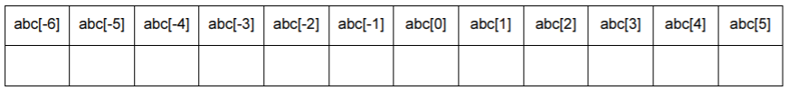

В режиме командной строки задайте значение переменной abc = "ABCDE". Меняя значение индекса, заполните (на листочке) следующую таблицу. Перечеркните выражения, приводящие к ошибке.

A. Напишите программу, которая считывает в переменную string строку длиной больше 3 символов, вычисляет и печатает результат:
В режиме командной строки задайте значение переменной abc = "ABCDE". Меняя значение индекса, заполните (на листочке) следующую таблицу. Перечеркните выражения, приводящие к ошибке.
B. Напишите программу, которая считывает в переменную string строку длиной больше 3 символов и
C. Напишите программу, которая считывает с клавиатуры две строки с неповторяющимися символами и печатает:
D. Напишите программу, которая считывает с клавиатуры строку, состоящую из нескольких слов, разделённых пробелами (между каждой парой слов ровно один пробел). Программа должна напечатать каждое слово на новой строке.
Указание: используйте цикл for
Е. Напишите программу, которая считывает с клавиатуры строку с неповторяющимися символами и число k меньше длины строки. Программа должна вывести случайные неповторяющиеся k символов из этой строки.
Подсказка: Чтобы вычислить случайный символ, используйте функцию randint(). Чтобы символы не повторялись, удалите выбранный символ из исходной строки (задача В пункт 3) и повторите операцию нужное число раз.
F. Напишите программу, которая считывает с клавиатуры строку с неповторяющимися символами,